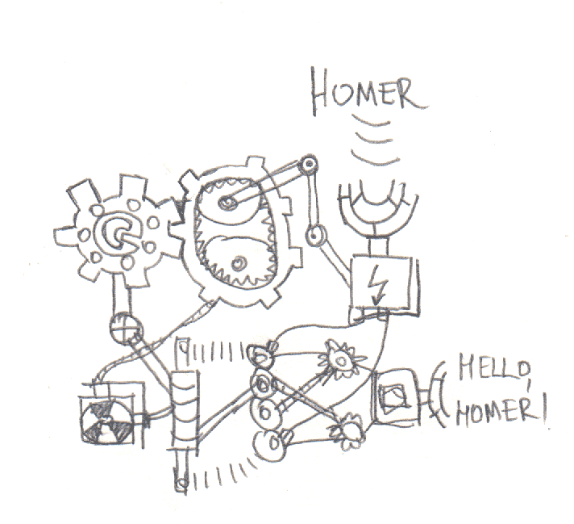
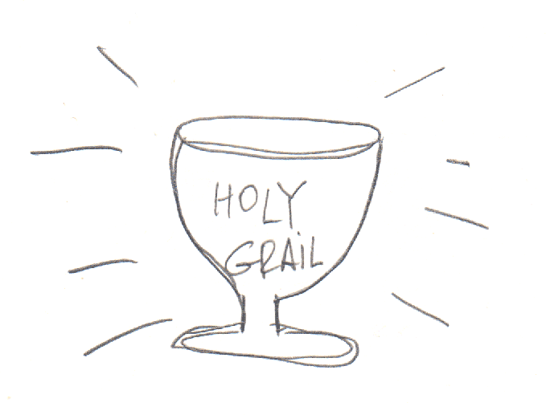
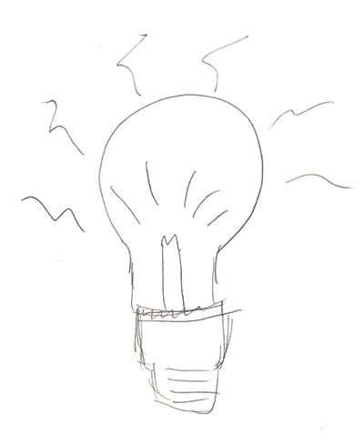
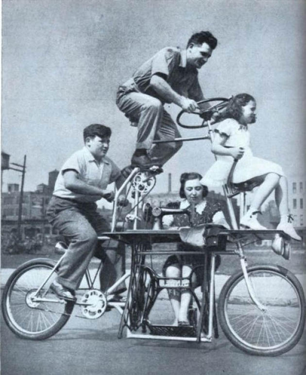

Complexity
Abstraction matters
It's easy to add new things that fit the abstraction

Absolute flexibility
Ask why
What and how isn't enough.
Over-abstraction could be avoided.
Simplicity

What if it will go wrong?
What if we need to exchange X with Y?


Gas-proof stroller...
Would it?
- How certain you are?
- If it would, how bad would it be to refactor?
Code for use-case, not for re-use-case

Refactor all the time
That could be better than complexity.

Except you're creating a library or a framework

Simple isn't easy.
Authorities

- Programming founders
- Prominent OpenSource contributors
- Conference speakers
- Lead developers
- etc.
They know the stuff!
But...
Don't believe them!
And don't believe me as well ;)
There are problems:
- Misunderstanding
- Mistakes

- Context
- Skill
- Wording
- ...

10.000 hours could make one a superhero.
But there will be mistakes still.
Don't believe
Ask, learn, understand.
Some words about frameworks...
Frameworks are tools.

But they're often treated like authority sources.
In reality...
Framework won't always save your ass.
Do what works for you and your team. Learn best practices to adapt for your use cases. Do not blindly copy them.
Facts

Rely on facts, not opinions
Often it's hard...


Fear

Bosses
Junior stock exchange worker failed and lost $5M. He thought he would be fired...
Next day he was not and asked why...
The answer was...
We've just invested $5M in your eduction. Why should we fire you?
How to fix it, not who's to blame.

They work at the company level.
Sometimes punishment is the best possible solution.
But usually it's not.
Be honest.

Colleagues or community

What colleagues would say?
Someone may not like it. I'd better keep it to myself.
or worse...
I'd use all the cool patterns in my next lib cause people like it.


There was a tale in ancient greece...


Nothing changed since then :)

Confidence comes with experience!
But where to get it?
Try all the cool new things!
* Not at production server
Learn from authorities.
But dig down to facts!
Share your stuff.
We're all humans
We're all different
We're all imperfect
And that's OK

Bonus